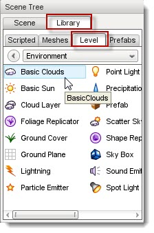
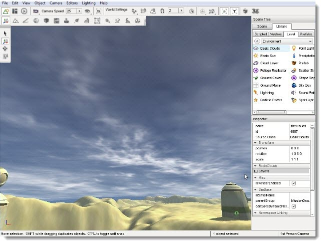
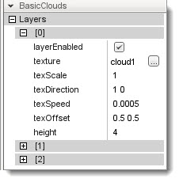
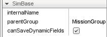
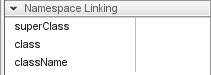
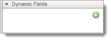
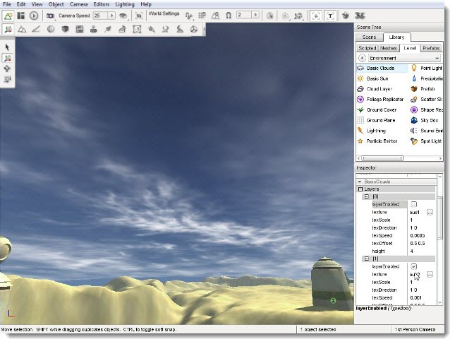
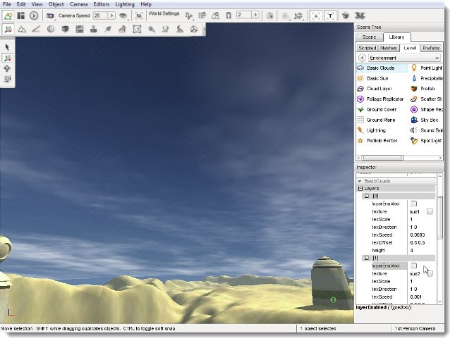
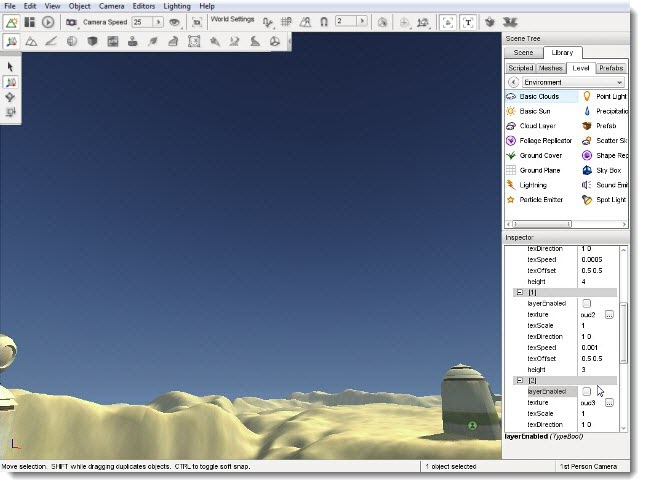

Introduction
Once you have decided on your level's sky, whether it's a Skybox or
ScatterSky, you can continue to customize the scene with clouds. There
are two cloud objects you can choose between: Basic and Advanced Clouds. This guide covers the
Basic Clouds object.
The Basic Cloud system renders up to three textures to separate layers,
at varying heights, detail levels, and speeds. Though basic and less
memory intensive, you can build very detailed and realistic clouds for
your level.
Adding a Basic Clouds Object
To add a Basic Clouds object: select the Library tab in the Scene Tree panel. Click on the Level tab and then double-click the Environment folder. Locate the Basic Clouds entry.

Double-click the Basic Clouds entry and a dialog will appear:

Enter a name for your clouds object then click the Create New button. A Basic Clouds object will be added to your level. Three separate cloud layers will be rendering and moving across the sky slowly:
(click to enlarge)

Basic Cloud Properties
Additional properties can be changed with the Inspector pane. To change a Basic Clouds properties using the Inspector Pane click the Scene tab, then click the name of your new Basic Cloud object. The Inspector pane will update to display the current properties of your new sun.
Hover over each section in the image below to see a description of the fields within it:


layerEnabled: TypeBool. Enable or disable rendering of this layer.
texture : TypeImageFilename. Texture for this layer.
texScale : TypeF32. Texture repeat for this layer.
texDirection : TypePoint2F. Direction texture scrolls for this layer.
texSpeed : TypeF32. Speed texture scrolls for this layer.
texOffset : TypePoint2F. UV offset for this layer.
height : TypeF32. Abstract number which controls the curvature and height of the dome mesh.', WIDTH, 450)" onMouseOut="UnTip()" >
isRenderEnabled : TypeBool. Only render if true (and if class is render-enabled, too).', WIDTH, 450)" onMouseOut="UnTip()" >
canSaveDynamicFields: typeBool. True if dynamic fields (added at runtime) should be saved, defaults to true.
internalName : TypeString. Non-unique name used by child objects of a group.
parentGroup : TypeString. Group object belongs to.', WIDTH, 450)" onMouseOut="UnTip()" />
superClass: TypeString. Links object to script super class (parent) namespace.
class: TypeString. Links object to script class namespace.
className: TypeString. Legacy version of class field.
', WIDTH, 450)" onMouseOut="UnTip()" >
(n/a): *. No stock dynamic values.', WIDTH, 450)" onMouseOut="UnTip()" >
Cloud Layers
While editing your Basic Clouds object, you may discover the need to view and edit individual layers. Open the BasicClouds section of the Inspector pane. Under the Layers sub-section you will find three layers labeled by an index. Each index refers to a layer and determines rendering order. The
layer[0] will be rendered first, layer[1] next, and finally layer[2]. In simpler terms:
- layer[0] is drawn on top of the sky
- layer[1] is drawn on top of layer[0]
- layer[2] is drawn on top of layer[1].
You can adjust the visibility of each layer by toggling the layerEnabled
property. If all three layers are disabled the Basic Clouds object will not be visible at all:
Layer 0 Disabled
(click to enlarge)

Layer 1 Disabled
(click to enlarge)

Layer 2 Disabled
(click to enlarge)

Regarding Movement
Unfortunately, static images cannot properly show how the remaining fields affect the Basic Cloud layers, since they all pertain to the motion of the clouds. Clouds can only move horizontally, they can not move up and down. This horizontal movement is described in the
texDirection property.
The texDirection property takes two values, separated by a space: "X Y". Each value corresponds to the axis a texture should scroll on as well as the direction of movement on that axis.. The range of each value is -1.0 to 1.0. For example: A value of "1 0" will scroll the texture directly along the X axis in the positive direction with no movement along the Y axis.
A single property, texSpeed, controls how fast the cloud layer moves. If the property is set to 0, the cloud layer will not move. The higher the number, the faster your cloud texture will scroll across the sky.
With the texOffset property you can displace how the multiple textures line up or overlap with each based upon whatever looks visually best. For example, at the seam where the texture repeats, you might want that to be on the horizon rather than directly overhead. Adjusting the texOffset helps you visually adjust this. If you have a grasp of UV animation, this will come naturally.
Conclusion
In previous guides, you learned how to add different sky and sun objects. Regardless of your choice, a successful simulation of an atmosphere will be enhanced by the presence of clouds. This guide's intention was to introduce you to the Basic Clouds object.
You can read through the Creating A Sky Tutorial which contains a full walkthrough of creating a sun, sky, and clouds for your level.
|
{kind=link}
{kind=link}
{kind=link}
{kind=link}